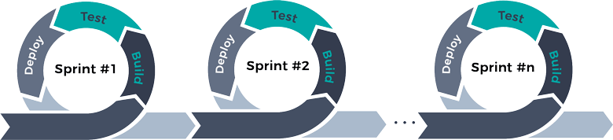
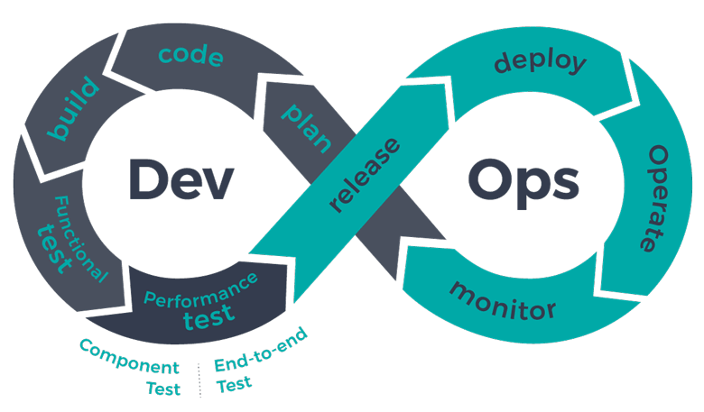

Agile development is a methodology that is a time-bounded and iterative approach to building software that works incrementally from the start of the project, rather than delivering it all at once. It ties in with the DevOps concept in that it is a way of structuring development to fit more comfortably with integrating development and operations. There are many ways to implement Agile methods, but they all share familiar concepts. First, the customer and the developers agree on a list of features the software should deliver. The customer prioritizes the features, and developers estimate how long each item will take.
Once the feature list has been approved, development goes into time-bounded sprints that consist of building, testing, and deployment until all the items are done.
Along the way, the goals of a sprint may be revised to reflect the progress that has been made by previous ones.
Analysis, design, coding, and testing are done continuously on agile projects. It doesn’t go in a linear progression as it does in monolith projects. It’s all happening at once.
Development is going to be iterative. It starts simple, then adds complexity. “Things are going to change” is an accepted axiom here. That leads to adaptive planning, where the scope of things that are done will also change. Customers, for example, may change how they describe what they want when they see what is coming out of the process.
Scrum is the name given to a framework focused on a sprint as well as the team that is involved in that sprint. The structure of a sprint affects four scrum ceremonies – Planning, Daily Scrum, Demo, and Retrospective.
Planning is where the team figures out what they are about to do. The daily scrum is a short daily meeting where the team syncs with each other. In the end, there is a demo where the team shows off what they have done in the sprint. Lastly, a scrum retrospective analyzes what worked and what didn’t.
Scrum teams are cross-functional, having testers, designers, and ops engineers (as well as developers) on board. But there are specific roles that need to be filled.
One role is the product owner. They are the product champions that also understand the business and market requirements of it. They are the priority arbiters.
The scrum master coaches the team, the product owner, and the business on the scrum process. They are not “product managers.” They resolve impediments and distractions for the development team, running interference for them as it were.
There are also the barnyard animals. Scrum participants will fall into two categories. They are either pigs or else they are chickens. That means that participants in a scrum are either fully committed to the project (pigs) or simply participants (chickens).
Chickens (who might be managers or stakeholders) should not be active participants in a scrum meeting. They might lead it away from the previously agreed-upon goals of the entire team. The Chickens’ collective view orients around delivering business value and long-term vision. That will align more with the Scrum Product Owner, rather than the pigs’ point of view. How did those names arise? Think of a business named “Ham and Eggs.” A pig has to commit to making it happen, while a chicken can participate. The names have stuck.
DevOps extends Agile principles beyond the boundaries of “the code” to the entire delivered service.
Because DevOps merges development and operations into one continuous flow that feeds on itself, it has given rise to the idea of the “full stack” developer. That is one who is familiar with all the stages of software development and deployment and can act on them.
The expertise of these folks might be expected in:
Rather than being an expert specialist, the full stack developer is a competent generalist. By understanding how everything works from the top to the bottom of the software stack, they can anticipate problems.
This is the sort of team member that can understand how changes will propagate through an entire project, even though only one part of that change may be visible from within the current aspect. And this breadth of vision is what gives their contributions value to the project.
Not only that, a full stack developer will most likely end up using DevOps-style thinking and tools to gain what they want. Taking a whole stack viewpoint leads to using the same kinds of processes found in DevOps discipline since both approaches involve the entire process rather than just one part of it.
Agile and DevOps work together in separate ways. Agile focuses on the continual delivery of smaller parts of an overall project, while DevOps will look at how an entire project functions and can be tweaked to function even better. Their range of vision differs, much like a microscope and a telescope, but both will focus on the same project from their vantage points.